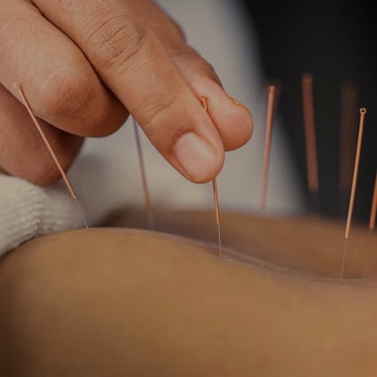

Acupuncture Therapy

Acupuncture Therapy offers a complementary approach to managing pain, addressing certain physical conditions, and supporting the body's physiological responses. Research suggests that stimulating specific acupuncture points may influence nervous system activity, pain-processing pathways, and local tissue responses. These interactions are being studied for their potential to relieve discomfort, improve physical function, and support the management of several health conditions.
Benefits may include:
- Pain Management & Musculoskeletal Support: Acupuncture has been studied for its potential to alleviate several forms of acute and chronic pain, including lower back pain, neck pain, and osteoarthritis-related discomfort. Research suggests that stimulating specific acupuncture points may influence the nervous system's processing of pain signals and activate the body's natural pain-modulating mechanisms. These effects may help reduce pain intensity, improve physical function, and make everyday movement more manageable.
- Headache & Migraine Management: Acupuncture has been studied for its ability to reduce the frequency and severity of migraines and tension-type headaches. By influencing pain-processing pathways and potentially modulating mechanisms involved in headache development, regular acupuncture treatments may help reduce headache occurrence and provide a complementary approach to long-term symptom management.
- Nausea & Vomiting Management: Stimulation of specific acupuncture points, particularly the P6 point located on the inner wrist, has been studied for its ability to reduce nausea and vomiting. This approach may be beneficial for certain types of nausea, including postoperative nausea and symptoms associated with chemotherapy.
Each person's experience is unique, and results may vary depending on individual needs and the condition being addressed. Acupuncture Therapy is intended as a complementary healthcare practice and is not a substitute for appropriate medical evaluation or treatment.
*Contact for pricing details.